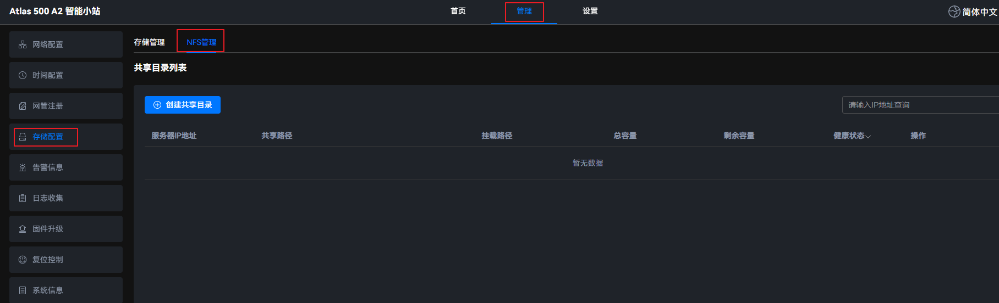
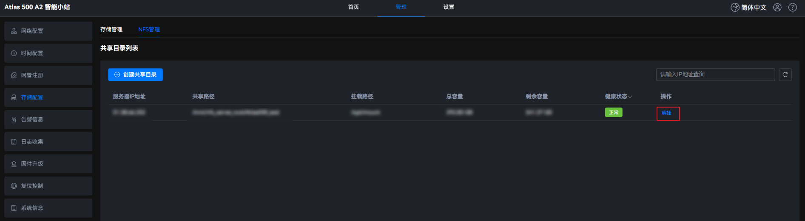

用户除可以使用本地磁盘外，还可以使用NFS挂载存储服务器共享目录来扩展存储空间，用于存储业务数据。

- NFS协议为不安全协议，没有用户认证机制，数据在网络上明文传输，存在一定的安全风险，建议仅在受信任的安全区域中使用，且不要传输敏感数据，默认使用V4协议。
- NFS挂载的共享目录本地路径会同步NFS服务器共享目录的权限、属主和属组，请用户使用前确保NFS存储服务器安全，使用的目录和文件权限符合业务安全诉求。
- NFS挂载的共享目录中如果有特殊权限位（setuid、setgid）的文件或者可执行文件，在挂载的本地路径中，该文件的特殊权限位无法生效、也无法执行该可执行文件。
- 若Web界面长时间显示NFS挂载异常，可能是由于NFS服务端异常或关闭，导致Atlas 500 A2 智能小站与NFS服务端网络不通，建议对长时间显示异常的NFS挂载进行解挂操作。
创建共享目录
- 在主菜单中选择。图1 NFS管理
 - 单击“创建共享目录”，弹出“创建共享目录”对话框。图2 创建共享目录

- 根据界面提示配置参数，配置项参考表1。
表1 创建共享目录参数说明 参数名称
参数说明
取值样例
服务器IP地址
NFS服务器IP地址。
取值为IPv4地址。
192.168.1.192
共享路径
NFS服务器共享路径。
支持的最大取值长度为256，可由大小写字母（a~z、A~Z）、数字（0~9）和其他字符（/_-）组成，且以/开头。
/home/nfssharedir
本地挂载点
Atlas 500 A2 智能小站本地挂载路径。
支持的最大取值长度为256，可由大小写字母（a~z、A~Z）、数字（0~9）和其他字符（/_-）组成，且需要以/开头。
说明：默认可输入的挂载路径为“/opt/mount/”目录。若用户想在其他路径下挂载，需要先执行/usr/local/mindx/MindXOM/tools/mount_white_path add Absolute_Path命令，将挂载路径手动添加到白名单中。具体处理方式请参见mount_white_path命令。
/opt/mount/
NFS协议版本
NFS协议的版本信息。
目前仅支持版本NFS4。
NFS4
- 单击“确认”。
在展示区域中，显示服务器IP地址、共享路径、挂载路径、总容量、剩余容量、健康状态和操作等信息。
- “健康状态”列展示信息为共享目录的工作状态。
- 如果Atlas 500 A2 智能小站与存储服务器之间存在网络故障或者NFS服务器状态异常；创建共享目录操作会在等待一段时间后显示失败，需要用户根据告警信息排查故障后再创建共享目录。具体处理方式可参考《Atlas 500 A2 智能边缘管理系统 告警处理》中的“ALM 0x00140000 NFS异常”告警。
- 挂载点目录的默认权限为755，目录下的文件权限用户需要自己审视并保证合理性。用户可通过登录develop模式下执行chmod命令来修改权限。
解除挂载
解除挂载会导致已挂载到该分区的容器应用不可用，请谨慎操作。如需解除挂载，请在没有容器应用使用该共享目录的情况下，执行此操作。
- 在主菜单中选择。图3 NFS管理

- 在需解挂载目录的“操作”列单击“解挂”，弹出操作确认提示框。图4 解挂载目录
 - 单击“确认”。